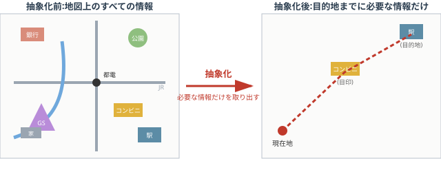
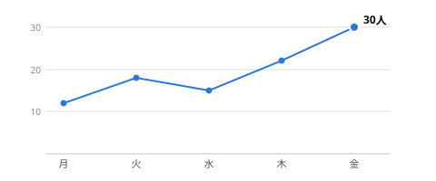
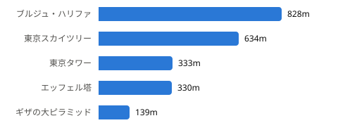

情報デザインとは、社会の中にあるさまざまな情報を受け手に分かりやすく伝えるための手法のことをいう。受け手に対して情報を分かりやすく効率的に伝えるためには、どのような手法があるのかを理解する必要がある。膨大な情報の中から受け手は自分に必要な情報かそうでないかを判断し、情報を効果的に活用しなければならない。そのため情報を発信する側には、受け手の状況に応じて情報の抽象化・可視化・構造化を行う方法や、年齢や障がいの有無、言語や文化などに関係なく情報を伝える方法が必要となる。情報の抽象化とは大量の情報の中から必要なところを取り出すことをいい、例えば銀行やコンビニ、ガソリンスタンド、川、公園、都電の停留所、駅などが書き込まれた地図から、目的地までの道順を示すために必要な情報だけを取り出して示すことなどが挙げられる。情報の可視化とは情報を視覚的に表現することをいい、例えば予定を一覧にまとめた表や、曜日ごとの数値の変化を表す折れ線グラフ、世界の高層建築物の高さを比較したインフォグラフィックスなどが挙げられる。情報の構造化とは要素どうしの関係性を分かりやすく整理することをいい、物事の順序を示す図、条件によって分かれる分岐を示す図、上下関係を示す階層の図、あるものが別のものを含む包含関係の図、複数の要素が重なり合う関係を示す図、全体のばらつきや傾向・分布を示す図などによって表される。このほかにも、湘南台情報技術検定試験の申し込み方法のように、個人申し込みと団体申し込みでそれぞれ受付期間や受験料、必要書類、申し込み方法などが定められている案内文で手続きを説明する例もある。情報を正しく効率的に伝えるためには、ある基準を用いて情報を整理する必要がある。その基準として、場所、アルファベット(50音)、時間、カテゴリー、階層の五つが挙げられる。これはアメリカのリチャード・ソール・ワーマンが提唱したもので、究極の五個の道しるべといわれ、場所(Location)、アルファベット(Alphabet)、時間(Time)、カテゴリー(Category)、階層(Hierarchy)の頭文字を取ってLATCHともよばれる。場所を基準に整理した例としては地図や路線図、座席表があり、アルファベット(50音)を基準に整理した例としては辞書や電話帳、名簿があり、時間を基準に整理した例としては歴史年表やテレビの番組表、時刻表があり、カテゴリーを基準に整理した例としては動物や植物の分類表や鉱物の分類表、図書館があり、階層を基準に整理した例としては組織の系統や、価格の安い順、距離の近い順に並べたものがある。また、整理された情報どうしの結び付きは、並列、順序、分岐、階層、因果などで表現することができる。都道府県を場所の順に並べた場合と五十音順に並べた場合とでは、目的によってどちらが分かりやすいかが変わってくる。このように、情報デザインはさまざまなところで活用されているが、いずれの場合も重要なことは、視覚的にきれいに見せることではなく、相手に理解してもらうためにデザインすることである。インターネットにおける情報発信が社会に浸透していなかった頃は、テレビやラジオ、新聞などのマスメディアが情報伝達の主な手段であった。そのため、多くの人に分かりやすく情報を伝えることが情報デザインの主な目的であった。しかしその後、インターネットの普及により、個人の経験や趣味・嗜好なども考慮した情報発信が可能になったため、情報デザインにおいても、多くの人ではなく、特定の個人に絞った工夫が求められるようになってきた。さらにSNSなどが発展してきた現代では、情報があふれたために、受け手側は自分の主張や考えに沿ったものを取捨選択する、見たいものだけを見る時代になりつつある。情報を受け取る際に思い込みがあると、偏った受け止め方をしてしまう危険がある。たとえば、ある一つの絵を「あひるだ」と思って見るとうさぎに見えていた部分が消えてしまい、「うさぎだ」と思って見るとあひるに見えていた部分が消えてしまうというように、同じ絵でもあひるにもうさぎにも見える図形がある。同様に、見方によって若い女性にも老婆にも見える図形や、向かい合う二人の横顔にも一つの盃にも見える図形もある。学校や役所など建物内に設置されている非常口のピクトグラムは日本人によって考案されたものであり、国際標準化機構(ISO)の規格に採用され、世界の多くの人々に認識されている。関連する内容として、図解表現やピクトグラム、ピクトグラムと東京オリンピック、デザインで問題解決、情報の偏りと閉鎖的な情報収集による問題についても、それぞれ別のページで扱われている。
1. 情報デザインとは
情報デザインとは、社会の中にあるさまざまな情報を受け手に分かりやすく伝えるための手法である。受け手は膨大な情報の中から自分に必要な情報かどうかを判断しなければならないため、発信する側には、受け手の状況(年齢・障がいの有無・言語・文化など)に関係なく情報を伝える工夫が求められる。その工夫は主に次の3つに分けられる。
- 抽象化:大量の情報の中から必要な部分だけを取り出すこと
- 可視化:情報を視覚的に表現すること(例:予定表、折れ線グラフ、インフォグラフィックス)
- 構造化:要素どうしの関係性を分かりやすく整理すること(例:順序・分岐・階層・包含・重なり・傾向分布を示す図)
地図の抽象化(抽象化前 → 抽象化後)

同じ地図でも、目的(道順を伝える)に不要な銀行・GS・公園・都電・家などの情報を取り除き、現在地・目印・目的地とその経路だけを残すと、伝えたいことが一目で分かるようになる。
画像ファイル:images/abstraction-map.svg
このほか、湘南台情報技術検定試験の申し込み方法のように、個人申し込みと団体申し込みで受付期間・受験料・必要書類・申し込み方法を分けて説明する案内文も、情報デザインの一例である。
2. 情報デザインの例
情報を正しく効率的に伝えるには、ある基準を用いて整理する必要がある。アメリカのリチャード・ソール・ワーマンは、次の5つを「究極の5個の道しるべ(LATCH)」として提唱した。
| 基準 | 例 |
|---|
| 場所(Location) | 地図、路線図、座席表 |
| アルファベット/50音(Alphabet) | 辞書、電話帳、名簿 |
| 時間(Time) | 歴史年表、テレビの番組表、時刻表 |
| カテゴリー(Category) | 動物や植物の分類表、鉱物の分類表、図書館 |
| 階層(Hierarchy) | 組織の系統、価格の安い順、距離の近い順 |
整理された情報どうしの結び付きは、次のような関係で表現できる。
(例:都道府県を「場所順」に並べる場合と「五十音順」に並べる場合とでは、目的によってどちらが分かりやすいかが変わる)
重要なのは、視覚的にきれいに見せることではなく、相手に理解してもらうためにデザインすることである。
可視化のイメージ:同じ数値を「表」「折れ線グラフ」「インフォグラフィックス」で表す
| 曜日 | 月 | 火 | 水 | 木 | 金 |
|---|
| 図書室の来館者数(人) | 12 | 18 | 15 | 22 | 30 |
表は、日ごとの正確な人数を確認したいときに向いている。

同じ数値を折れ線グラフにすると、水曜日にいったん減った後、金曜日に向けて増えているという「変化の傾向」が一目で読み取れる。
画像ファイル:images/library-visits-line-chart.svg

数値の一覧ではなく長さで比較すると、大小関係を直感的に把握できる。
画像ファイル:images/building-heights-infographic.svg
3. 情報デザインと社会の変遷
1. マスメディアの時代:インターネットが普及する前は、テレビ・ラジオ・新聞などが情報伝達の主な手段だった。目的は「多くの人に分かりやすく伝えること」。
2. インターネット普及後:個人の経験や趣味・嗜好を考慮した発信が可能になり、「特定の個人に絞った工夫」が求められるようになった。
3. SNS時代(現代):情報があふれ、受け手が自分の主張や考えに沿った情報だけを取捨選択する、いわゆる「見たいものだけを見る」傾向が強まっている。
コラム:多義図形
情報を受け取る際に思い込みがあると、偏った受け止め方をしてしまう危険がある。
- 「あひるだ」と思うとうさぎに見えていた部分が消え、「うさぎだ」と思うとあひるに見えていた部分が消える図形
- 見方によって若い女性にも老婆にも見える図形
- 向かい合う二人の横顔にも一つの盃にも見える図形
補足
非常口のピクトグラムは日本人が考案したもので、国際標準化機構(ISO)の規格に採用され、世界中で認識されている。
関連ページ:図解表現/ピクトグラム/ピクトグラムと東京オリンピック/デザインで問題解決/情報の偏りと閉鎖的な情報収集による問題